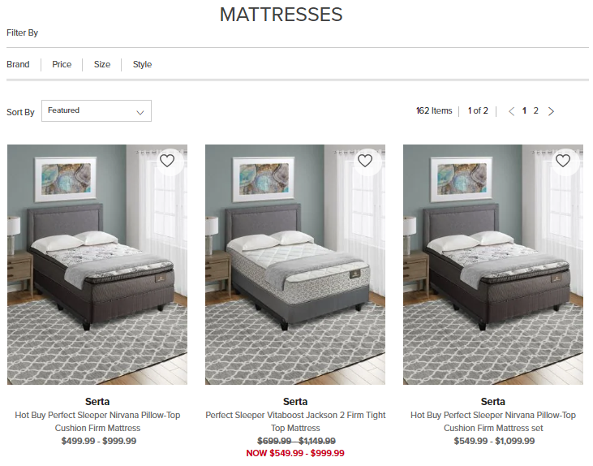
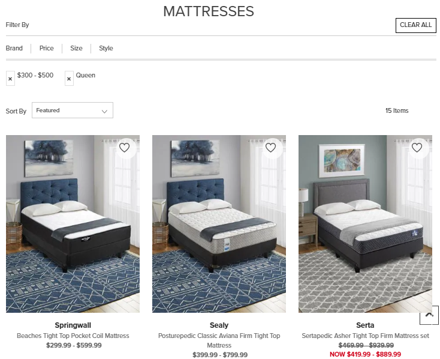
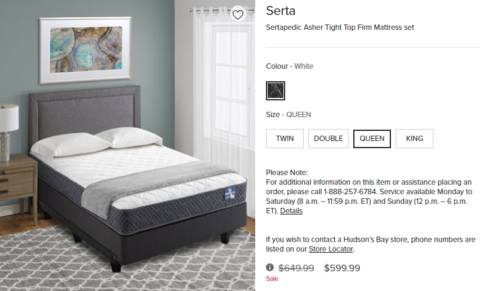
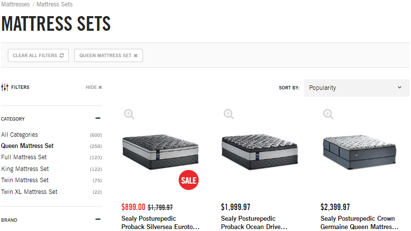
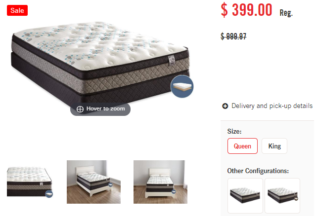
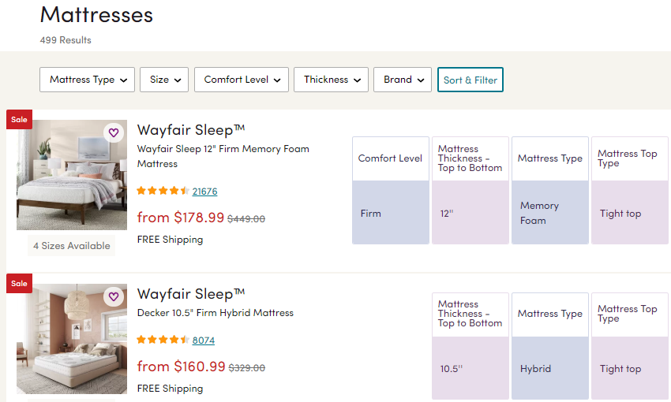
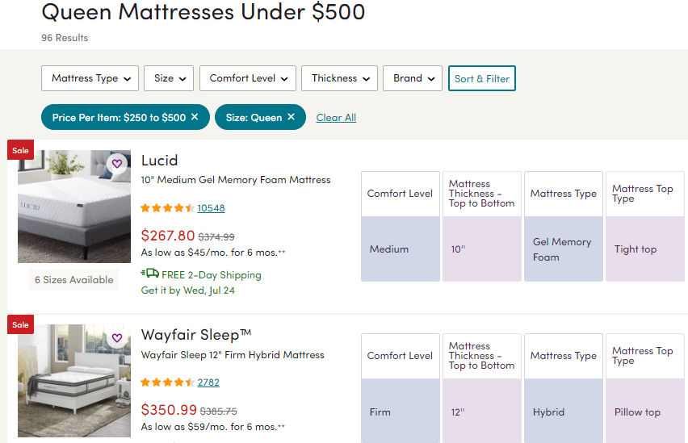
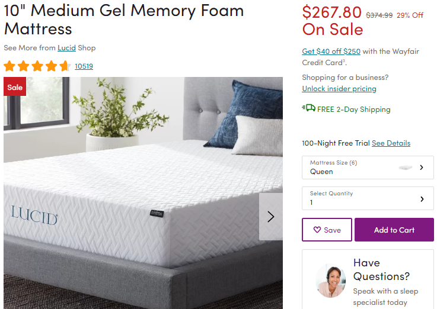

Mattress Price Range and Filter Interactions
Challenge
Mattresses of the same style will vary in price based on size such that a king size mattress costs more than a twin size mattress. As a standard, mattress businesses will list queen size pricing in their advertisments. However online retailers that sell clothing may display their prices as a range between lowest price (twin size) to highest price (king size), yet thus obscuring the queen size price within the range.
Goals
The goal of this research was to identify how users would be able to identify a queen size mattress at an advertised price from an online assortment of mattresses and to understand how their behaviour intersects with user-facing price display. The hypothesis was that users would expect that price seen in the array would be consistent upon reaching product detail page. My prediction was that customers would attempt to filter the product array down to queen size mattresses before identifying a product that suited their budget.
Research
Competitive Landscape Review
Three retailers were selected for usability testing: thebay.com, thebrick.com, wayfair.com. These retailers were selected both for their market share of mattress sales across Canada and their online presence.
Participants
8 Canadians were selected to participate; 5 female, 3 male. No parameters were defined for inclusion or rejection of participants.
Methodology
Unmoderated usability testing was done, facilitated through Usertesting.com.
Test Outline
The following prompt was given to all users:
- Go to thebay.com and find a queen mattress that fits your budget of $500
- Once you have found a queen mattress within your budget, add to cart
- Go to thebrick.com and find a queen mattress that fits your budget of $500
- Once you have found a queen mattress within your budget, add to cart
- Go to wayfair.com and find a queen mattress that fits your budget of $500
- Once you have found a queen mattress within your budget, add to cart
Results
thebay.com
Over a third of users leveraged refinements to isolate queen size mattresses within the pre-determined budget of $500 before clicking through to the product’s detail pages where they could then add to cart. The majority of all users simply scrolled through the product array to identify a mattress that would fall within their assigned budget of $500.
Users that did interact with product refinements to identify a queen size mattress were confused about which price they would be paying for their mattress when seeing the displayed price range.
“I filtered by price, but I’m still seeing a range here. That’s annoying.”
Users weren’t able to easily identify items that fit their budget if they relied exclusively on filtering capabilities prior to reaching product detail page where price by size was more apparent. Many users were unsuccesful in identifying a mattress within their price range on their first attempt.
thebrick.com
The majority of users first refined the assortment by mattress size. Displayed prices did not collapse into a range as each mattress product detail pages was split apart by size. As a result, all users were able to scroll through the array to find a mattress within their budget.
All users were able to correctly identify a mattress within their budget on their first attempt, even if they did not use any refinements.
wayfair.com
Refinements were clearly displayed at the top of the page and all users were able to isolate queen mattress using the size filter. Price was displayed in “from $_” format as opposed to listing full price range.
User-facing prices became specific to size once the refinement was applied. Three quarters of all users continued to use refinements to isolate a price within their budget while the remaining users scrolled through the array until they found something suitable.
All users were able to correctly identify a mattress within their budget on their first attempt, even if they did not continue to filter the array by price.
Impact
The results of this research was clear: user-facing price should be updated based on filter selected. Users were comfortable using refinements to isolate their preferred size and often relied on visually scanning an array in order to identify the price they were willing to pay. Users interacting with The Brick and Wayfair were able to easily identify a mattress within their alloted budget of $500 because displayed prices updated accordingly with filters. Users interacting with The Bay were less successful in identifying mattresses within their budget because displayed prices obscured the price of the size they would like to purchase. Based on this research, The Bay will incorporate pricing display based on refinement as a requirement for their next platform, launching 2020.
Reflections
This research was very successful in its impact for future success. In the interim, The Bay may be wise to consider aligning marketing to the discplayed price range. Creating marketing content that speaks to twin size prices (e.g. “Starting at”) instead of queen size would help improve the connection between product prices as advertised and reduce potential customer confusion.
Limitations
Limitations of study include not changing order of websites visited by users as this may have helped “train” customers to become more effective with their product refinement behaviour.
Learnings
Verbiage included in test outline included a call to action which aligned to on-site verbiage. Going forward it would be best to use neutral language that does not match exactly. Website interaction order should also be updated for participants to ensure that users are performing better by the end of the test by means of practice.